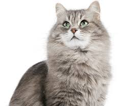
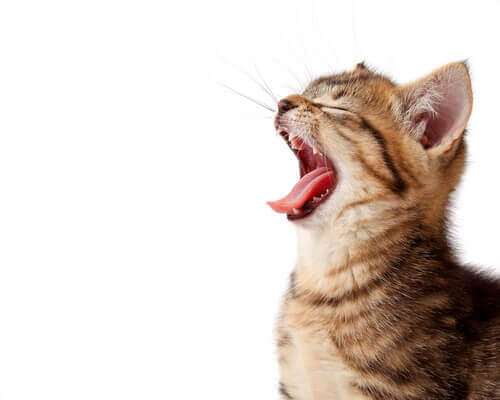

O gato (Felis silvestris catus), também conhecido como gato caseiro, gato urbano ou gato doméstico, é um mamífero carnívoro da família dos felídeos, muito popular como animal de estimação. Ocupando o topo da cadeia alimentar, é predador natural de diversos animais, como roedores, pássaros, lagartixas e alguns insetos. Segundo pesquisas realizadas por instituições norte-americanas, os gatos consistem no segundo animal de estimação mais popular do mundo, estando atrás apenas dos peixes de aquário.Dados censitários apontam que nos Estados Unidos existem mais gatos domésticos do que cachorros.
A primeira associação com os humanos da qual se tem notícia ocorreu há cerca de 9 500 anos, período superior ao estimado anteriormente, que oscilava entre 3.500 e 8.000 anos. A subfamília Felinae, que agrupa os gatos domésticos, surgiu há cerca de 12 milhões de anos, expandindo-se a partir da África subsariana até alcançar as terras do atual Egito. Acredita-se que o gato-selvagem-africano (Felis silvestris lybica) era seu antepassado imediato e evidencias genéticas assinalam que os gatos domésticos atuais partilham uma procedência direta com os gatos selvagens do Oriente Médio.
Existem cerca de 250 raças de gato doméstico, cujo peso variável entre 2,5 a 12 kg classifica a espécie como animal doméstico de pequeno a médio porte. Assim como ocorre com as raças de cães que apresentam esta mesma faixa de peso, o gato doméstico pode viver entre quinze e vinte anos. Devido à sua personalidade independente, tornou-se um animal de companhia em diversos lares ao redor do mundo, agradando pessoas dos mais variados estilos de vida. Na cultura humana, figura da mitologia às superstições, passando por personagens de desenhos animados, tiras de jornais, filmes e contos de fadas. Entre suas mais conhecidas representações, estão os gatos: Tom, Frajola, Manda-Chuva, Gato Félix, Gaturro, O Gato de Botas e Garfield.
Todas as pessoas que possuem um animal de estimação adorariam que eles vivessem por muito mais tempo.
Mas diversas medidas são necessárias para que o gato atinja a longevidade com bastante saúde, principalmente com muita qualidade de vida ao longo dos anos.
Por isso, separamos alguns desses cuidados com gatos, de extrema importância, para você conhecer.
A proteção para seu gato é um dos principais fatores quando falamos de cuidados com gatos, pois diariamente todos os gatos são expostos a diversos patógenos e doenças e, seja por uma questão ambiental ou então de sua própria imunidade, podem acabar sendo afetados.
E muitas delas podem ser controladas anualmente, um exemplo principal que temos é o uso da vacinação.
Quando falamos de cuidados com gatos, talvez esse seja o que afete mais drasticamente a expectativa de vida dos seus bichanos.
Muitas clínicas e hospitais seguem um esquema com carteirinha, que vem de maneira completa e muitas delas com o reforço anual.
É de extrema importância ter a vacinação do seu gato em dia, principalmente de maneira preventiva contra doenças infectocontagiosas.
A vacinação deve ser realizada por um médico veterinário, de preferência em locais de fonte confiável! Pois o local deve manter a vacina refrigerada e não ter estoque de vacinas vencidas.
O esquema de vacinação se inicia quando você possui um gato filhote, ele deve seguir o seguinte padrão:
∙ 60 dias: 1ª dose da vacina múltipla;
∙ 80 dias: 2ª dose da vacina múltipla;
∙ 120 dias: 3ª dose da vacina múltipla;
∙ 130 dias: antirrábica
Se o seu gato não é mais um filhote, o protocolo de vacinação deve ser diferente, ele receberá duas doses da múltipla com o intervalo de 21 dias e a vacina deve ter o reforço anual!
Uma das curiosidades sobre gatos que envolve a vacinação é que, mesmo quando feita por profissionais, a aplicação pode não ser feita corretamente.
Arranhar é uma parte normal do comportamento do gato e tem várias funções, incluindo condicionamento das garras, proporcionar um meio de alongamento e agir como um marcador (tanto olfativo, aromático e visual). Gatos gostam de arranhar! O ato de arranhar realmente remove garras externas desgastadas e gastas, expondo garras novas e mais afiadas. No entanto, aquilo que é um comportamento normal de gato pode tornar-se frustrante para seus donos – especialmente quando o gato em questão começa a destruir móveis ou mesmo arranhar os membros da família.
A grande maioria dos gatos viverá feliz com um vida sem destruir móveis, alguns passos extras tomados pelos donos dos gatos podem ajudar a garantir que isso aconteça. Na maioria dos casos, o problema de arranhar pode ser prevenido com gestão ambiental e comportamental.
Não! Arranhar faz parte de sua natureza, como lamber-se. Seria muito cruel se você o impedisse de viver da forma que um gato deve viver. Pra isso servem os arranhadores, eles são próprios pra arranhar e você mantém seus móveis inteiros. Então, ensine seu gato a arranhar arranhadores próprios e ele será um gato feliz (e você um dono mais feliz também!)
Em alguns casos, manter o gato longe da área que está sendo prejudicada é a solução mais simples para o problema. Uma outra variação é permitir que o gato tenha acesso a tudo o que está sendo arranhado inadequadamente, mas tornar essas área pouco atraentes para o gato, enquanto faz uma mais atraente. Muitos gatos arranham o sofá porque, simplesmente, não tem outra opção para exercerem suas necessidades. Todos os gatos tem a necessidade de arranhar e devem ter arranhadores apropriados para fazê-lo. Com sorte, seu gato não está arranhando mas você está se antecipando ao problema.
A maioria dos gatos prefere arranhar uma superfície vertical que seja alta o suficiente para permitir que eles dobrem totalmente suas costas e realmente se estiquem, mas também suficientemente estáveis que não precisem se preocupar se irão derrubá-los. Árvores ou condomínio de gatos podem ser uma excelente opção se forem bem-construídos com o material adequado, já que eles também fornecem aos gatos a capacidade de subir e olhar ao redor – outro comportamento muito natural do bichanos!
Os gatos só faltam falar pra demonstrar que estão felizes. Cada gato tem um jeito próprio de expressar felicidade. Aprenda a reconhecer alguns destes sinais: